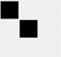
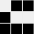
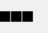

El Juego de la Vida es un autómata celular creado por el matemático británico John Conway en 1970. A pesar de su simplicidad, el juego es conocido por su capacidad para generar patrones complejos y, en ocasiones, impredecibles.
1. Cualquier célula viva con menos de 2 vecinos vivos muere, como si estuviera por soledad.
2. Cualquier célula viva con 2 o 3 vecinos vivos sobrevive a la siguiente generación.
3. Cualquier célula viva con más de 3 vecinos vivos muere, como si estuviera por sobrepoblación.
4. Cualquier célula muerta con exactamente 3 vecinos vivos se convierte en una célula viva, como por reproducción.
